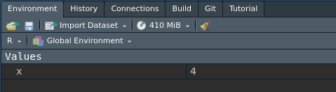

2 + 2[1] 4Una vez instalado, podemos lanzar el software R mediante el consiguiente ejecutable. Esto mostrará un terminal (por defecto, con el símbolo >) que quedará esperando a que introduzcamos nuestras órdenes para ejecutarlas.
Por ejemplo, si escribimos la expresión 2+2en el terminal, y pulsamos Intro, obtendremos el resultado en una nueva línea.
2 + 2[1] 4Vemos que aparece en primer lugar un número entre corchetes ([1]), y, a continuación, el resultado esperado (4). El primer número indica el orden del primer elemento mostrado, y el segundo el resultado de evaluar la expresión.
Cada línea del código que nosotros escribimos es leída y evaluada secuencialmente, aunque las introduzcamos juntas como parte de un todo.
Por ejemplo, si ejecutamos la siguiente serie de expresiones aritméticas en el terminal,
2 + 1
3 * 5
8 * 4automáticamente aparecerá el resultado detrás de cada una de ellas, como si se hubiesen escrito una a una.
2 + 1[1] 33 * 5[1] 158 * 4[1] 32<-
Cuando ejecutamos las instrucciones en el terminal, el resultado que se muestra no se guarda en ningún sitio, y no se puede reutilizar en otras partes del código.
Si necesitamos que el resultado de una instrucción quede guardada, podemos asignarlo a una variable, con el operador <-
x <- 2 + 2Cuando asignamos un resultado a una variable, aparecerá en el entorno un nuevo objeto, que contendrá el valor asignado.

Para recuperar el resultado de la operación, simplemente invocamos el nombre del objeto.
x[1] 4Una vez definida la variable, podemos operar con ella del mismo modo que haríamos con una constante, aplicarle funciones o incluso utilizarla para crear una segunda variable.
x * 2[1] 8x + 5[1] 9sqrt(x)[1] 2y <- 2 * log(x)
y[1] 2.772589La instalación básica de R viene con las siguientes funciones básicas incorporadas:
| Nombre | Descripción | Expresión R |
|---|---|---|
| Unary plus | Identidad | +x |
| Unary minus | Inverso aditivo | -x |
| Suma | Adición | x + y |
| Resta | Sustracción | x - y |
| Multiplicación | Producto | x * y |
| División | Cociente | x / y |
| Cociente entero | Número de veces que el denominador está contenido en el numerador | x %/% y |
| Resto de la división entera | Remanente de la división entera entre numerador y denominador | x %% yrem(x,y) |
| Potencia | Eleva x a la potencia y |
x^y |
| Símbolo matemático | Descripción | Expresión R |
|---|---|---|
| \(>\) | Mayor que | x > y |
| \(<\) | Menor que | x < y |
| \(\equiv\) | Identidad, equivalencia | x == y |
| \(\neq\) | Desigualdad | x != y |
| \(\leq\) | Menor o igual que | x <= y |
| \(\geq\) | Mayor o igual que | x >= y |
| Nombre | Descripción | Expresión R |
|---|---|---|
| Negación (NOT) | No x |
!x |
| \(x\cap y\) (AND) | Intersección entre x e y |
x & y |
| \(x\cup y\) (OR) | Unión entre x e y |
x | y |
| Constante | Descripción | R |
|---|---|---|
| \(\pi\) | Número \(\pi\) | pi |
| \(e\) | Número de Euler | exp(1) |
| \(\infty\) | Infinito | Inf |
| (Not a Number) | Indeterminación | NaN |
| (Not available) | Valor desconocido | NA |
| Función | Descripción | R |
|---|---|---|
| \(\sqrt{x}\) | Raíz cuadrada de x |
sqrt(x) |
| \(e^{x}\) | Exponencial de x |
exp(x) |
| \(\ln{x}\) | Logaritmo natural de x |
log(x) |
| \(\log _{10} x\) | Logaritmo en base 10 de x |
log10(x) |
| \(\log_{a} x\) | Logaritmo en base a de x |
log(x, a) |
| \(|x|\) | Valor absoluto de x |
abs(x) |
| Función | Descripción | R |
|---|---|---|
| \(x!\) | x factorial |
factorial(x) |
| \(\binom{n}{m}\) | Combinatorio n sobre m |
choose(n,m) |